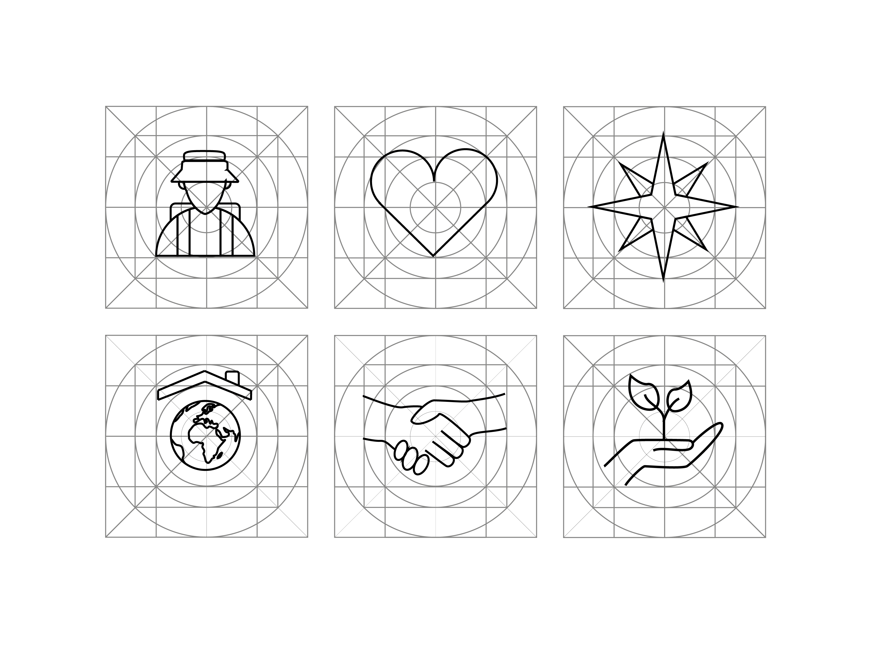
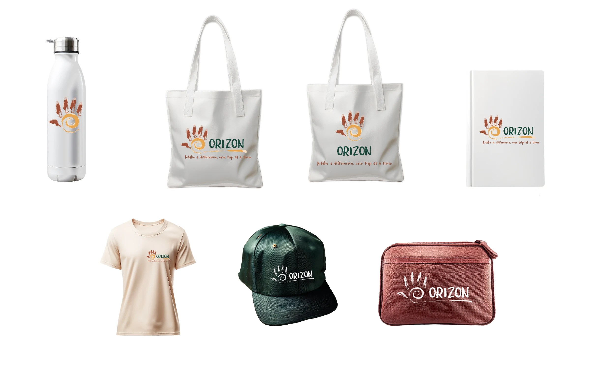

Design memorable journeys that respect the environment and value local communities.
Back to Visual & Content Design
BRAND IDENTITY & SOCIAL MEDIA · ORIZON
A coherent identity, from brand to content
Orizon is a brand concept dedicated to responsible and regenerative tourism. The project starts by defining the brand values and translates them into a recognisable visual system designed to work from the logo through to digital applications.
The same identity is then adapted for social media by differentiating formats, hierarchy and the amount of information according to each channel and audience, without losing consistency across touchpoints.
FROM BRAND TO CONTENT
01
Logo & Brand Identity
Concept, visual system and guidelines
02
Social Media
Strategy and channel-specific content
01 · LOGO & BRAND IDENTITY
Translating responsible travel into a visual system
Orizon is based on the idea of promoting a more conscious, sustainable and regenerative way of travelling. The brand centres the balance between travellers and local communities, with experiences designed to create value for both people and places.
The visual identity therefore starts from ideas of connection, reciprocity, authenticity and respect. The aim was not only to create a recognisable mark, but a language capable of carrying these values across different contexts.
Help people travel in a more conscious, sustainable and regenerative way.
Quality, personalisation and fair exchange to leave a positive impact on the places visited.
BRAND CONCEPT
Hand and spiral as symbols of connection
The mark combines a hand and a solar spiral in one form. The spiral occupies the centre of the palm, while the fingers use warm, earthy tones. The visual reference recalls symbols from Native American and Asian cultures and aims to evoke vital energy, human connection and a conscious footprint.
The logotype retains a spontaneous brushstroke to communicate craft and authenticity; the payoff “Make a difference, one trip at a time” connects travel to the idea of change created through small actions.

VISUAL SYSTEM
An identity designed to remain consistent across touchpoints
Brushberry Sans One for the logotype, Amatic SC for the payoff, Barlow Condensed for headings and social content, and Neue Haas Grotesque Text Pro for reading text.
Natural, deep tones inspired by earth, wood, vegetation and light to express authenticity, sustainability and regeneration.
Grid-based icons with a brushed stroke to maintain balance, clarity and continuity with the logotype.


Forest green
#1B493D
Golden amber
#E6A44F
Burnt sienna
#A05138
Moroccan sand
#96704C
Amazonian wood
#5B2C10
ACCESSIBILITY & GUIDELINES
Protecting brand legibility and recognisability
The brand colours were checked against WCAG criteria to maintain adequate readability in the main combinations.
The logo is applied on a white background or a white brushed surface when placed over photographs.
Chromatically complex backgrounds or backgrounds without a contrast area, which reduce legibility and recognisability.
FINAL SYSTEM
An identity designed to be applied
01
Brand system
02
Social content system
02 · SOCIAL MEDIA CONTENT DESIGN
Adapting content to the audience and platform
Social communication maintains the brand’s visual system but avoids replicating the same content on every platform. Format, amount of text and hierarchy change according to how people use Facebook, Instagram and YouTube.
The aim is to build recognisability without compromising each channel’s role: more explicit information on Facebook, authentic and concise visuals on Instagram, and longer, more in-depth storytelling on YouTube.
Clear messages and information available directly in the post, with more space for explanation.
Authentic aesthetics, natural colours and few graphic elements, favouring imagery that feels less constructed and more immersive.
Vlogs, personal stories and thematic content about culture, sustainability and responsible tourism.
OUTPUT BY CHANNEL
Same identity, different formats and goals
Cover and profile image, 1200×630px brand-introduction post, and 1080×1350px vertical content for events and travel.
1080×1350px posts about the brand, travel and events, with immersive imagery and essential information.
Channel profile and cover, plus 1280×720px video previews for vlogs and in-depth content.
CROSS-CUTTING PRINCIPLE
Consistency does not mean uniformity.
The logo, palette and visual tone keep the brand recognisable; what changes is how the content is prioritised and presented, so that each platform can fulfil a specific function.